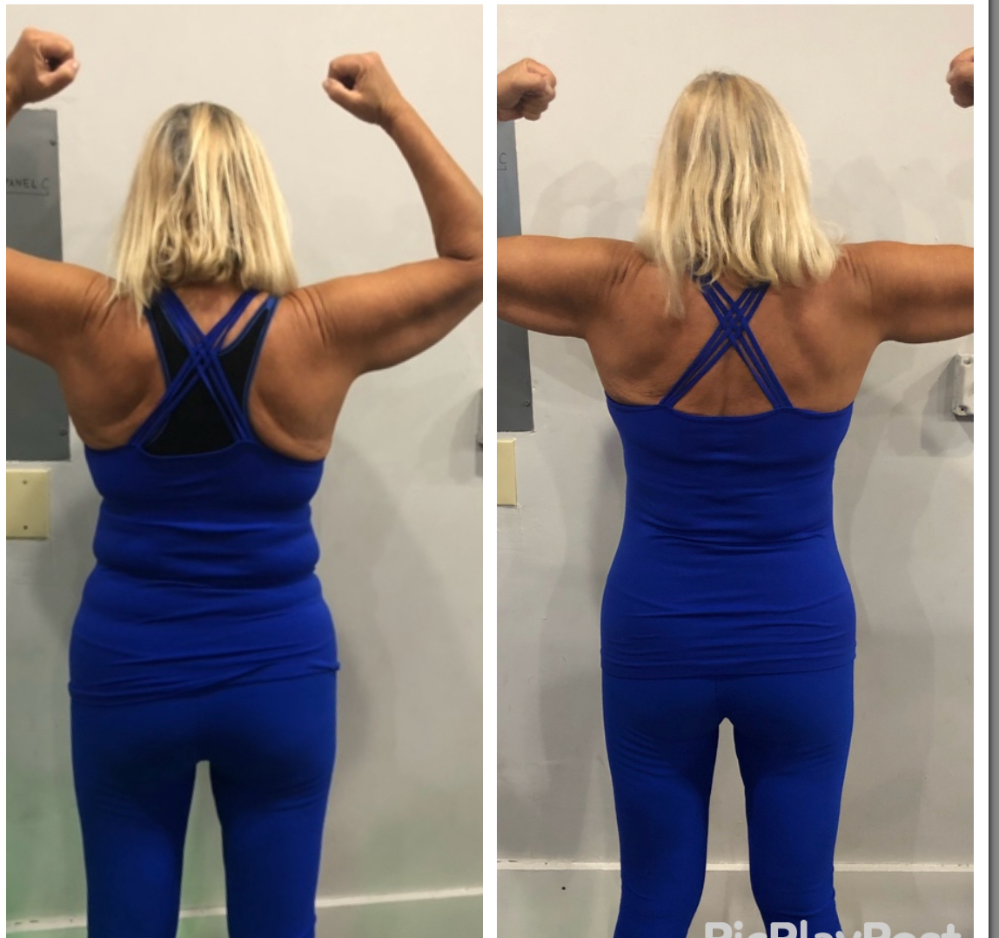
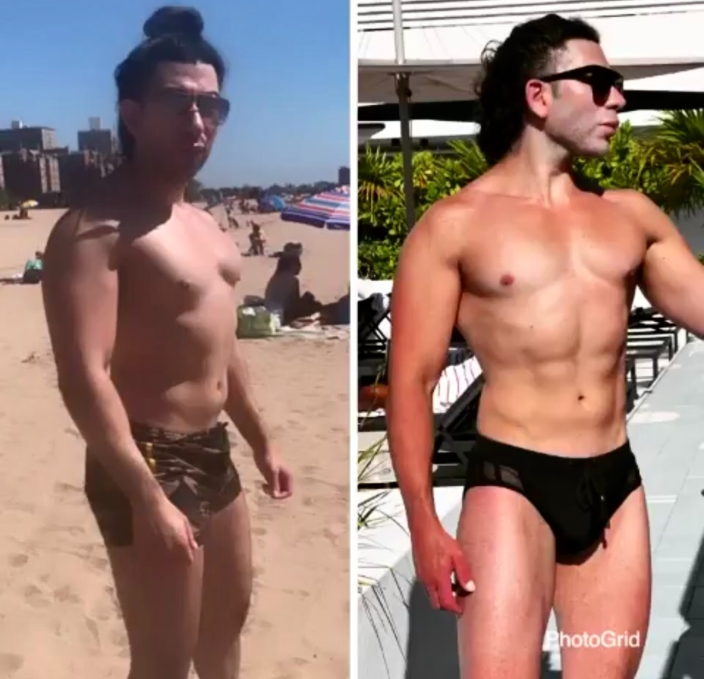
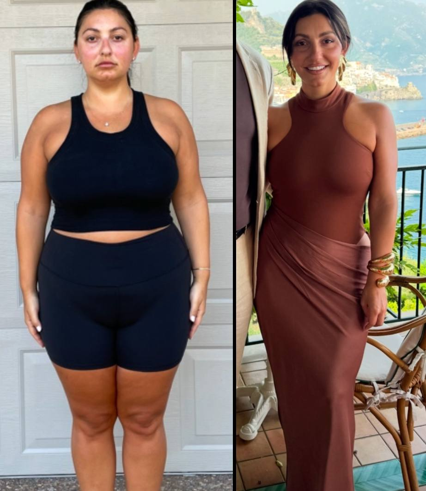

Se lo que se siente llegar muchas veces al gimnasio sin saber que ejercicios hacer o cual es la rutina más eficiente para ver resultados. O quizás has logrado algunos cambios por tu cuenta, pero te sentiste en un nivel en el que estas estancado o estacada y quieres seguir avanzando y viendo progreso. Es por esto que con mis 17 años de experiencia entrenando para lograr la transformación en mi propio cuerpo y con el conocimiento que he adquirido como entrenador físico en los últimos 10 años ayudando a cientos de personas al rededor del mundo a lograr el cuerpo de sus sueños. He creado estos programas que estoy seguro serán muy útiles para ti ya que aquí encontraras la compilación de todos mis años de experiencia y trucos que me ayudarán a mí en mi proceso. Recuerda que la constancia y disciplina será la clave para alcanzar cualquier meta en la vida y si yo lo logre estoy seguro que tú también puedes alcanzar ese gran cambio!! ¿Estas listo o lista para empezar esta transformación mente y cuerpo conmigo? ¡Vamos a lograr ese cambio juntos!
Felipe. “Es el mejor entrenador que pude encontrar. Inicié mi proceso porque era muy delgado y mi objetivo desde siempre fue subir masa muscular, con todos los consejos y guía de David lo logré. No es fáci porque requiere de mucha disciplina y compromiso, pero David siempre me esta guiando de su mano, y esta pendiente de cada detalle, de como voy con las comidas, de corregirme la técnica …. No solo es un gran entrenador personal que realmente se preocupa de sus clientes si no que también es un excelente ser humano !! 100/10
Lili Mi vida, Mente y fisico dieron un giro totalmente positivo Al comenzar a entrenar con David, a nivel professional guiada por un ser humano integro y dedicado totalmente a su profession El que hace ameno y facil El cambio de actitud a personas como yo que nunca habia hecho ejercicio, David nos cambia de adentro hacia afuera, a mis 62 años comenzo mi cambio y fue la mejor desicion que he tomado en mi vida, 💪gracias por tu dedication David💪
Carolina Páez Hay personas que llegan a tu vida con un propósito y David fue una de ellas. Me ayudo a crear la consciencia de lo que comía y el efecto que hacía en mi cuerpo. Ahora mantengo un estilo de vida balanceando y logre mejorar mi apariencia física con ejercicio y alimentación cuando en algún momento pensé que mi mejor opción era la Cirugia. Gracias david con cada cambio aumente mi seguridad y confianza . Me ayudo a evolucionar y a buscar una mejor versión de mi cada día por que el tiene el balance de lo físico y lo espiritual. Por eso lo recomiendo por que es la mejor inversión que estarás haciendo para ti. Carolina Paez since March 2018 🤗
Carlos Medina I meet David about 3 Years ago at a time where I lost hope in trainers and transforming my body. Before I meet David I had 5 trainers that got me no results. I started to believe that my body can’t grow further than what I have. David has changed my perception on trainers he’s absolutely phenomenal hes the first trainer to get me to my dream goal finally he gave me a meal plan and a workout regiment that really worked for my body type. I will definitely continue to workout with David for many more years to come
Simon Hace 6 meses decidí cambiar mi cuerpo y con el pasar de los días cambio mucho, y sin darme cuenta mi forma de pensar también cambio y esto gracias a @davidtorres.fit el cual a sido una guía motivaciónal al mil por ciento lo recomiendo a ojos cerrados y pasó de ser mi coach a se mi amigo.. Yo quiero Yo puedo.
I don’t even know where to begin because no words can truly capture the impact David has had on my life. What started as a fitness journey turned into a complete transformation—physically, mentally, and emotionally. He didn’t just help me become stronger; he helped me become the best version of myself. What sets him apart is his ability to tailor every training program specifically to your needs, capabilities, and goals. It’s not a one-size-fits-all approach—it’s designed just for you, ensuring progress, growth, and sustainability. Whether you’re a beginner or an experienced athlete, he meets you where you are and pushes you to where you want to be. Beyond training, he has been my light, my guide, and one of my greatest supporters. He stood by me on my wedding day, cheers me on in every aspect of my life and career, and constantly pushes me to aim higher. His personal advice, unwavering encouragement, and infectious energy make every session feel like more than just a workout—it’s therapy, laughter, and motivation all in one. More than a trainer, he’s become my best friend—someone who truly cares, believes in me, and fills my soul with joy every time I see him. If you’re looking for someone who will change your life, not just your fitness, look no further. I’m forever grateful!
